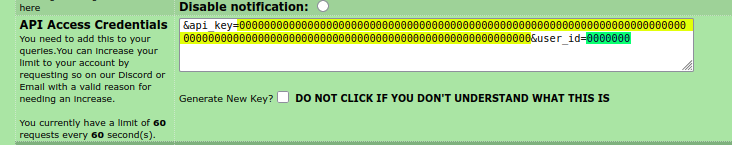

How to set Rule34 api credentials
Since Aug 19, 2025 the api.rule34.xxx REST API requires credentials for all requests made with the REST API. With that changes also came a rate limit of 60 request per 60 seconds.
In order to be able to make requests with rule34Py, you now have to set the api key and your user id.
Reference the rule34Py.rule34Py class documentation for an indication of which workflows have these limits.
Note that as of now, you need an rule34.xxx account.
Setting api credentials
A rule34.xxx account is required to receive REST API credentials.
Use any reasonable browser with javascript enabled to open any URL to the https://rule34.xxx site.
Login without account
Navigate to https://rule34.xxx/index.php?page=account&s=options
Scroll down to API Access Credentials, there you will find a long string similar to the one bellow. If you don’t see a text similar to the one below, click the checkbox Generate New Key? and then Save at the bottom, revisit the site.
The api_key is highlighted in yellow (the long block of text with 128 letters and numbers)
The user_id is highlighted in green (the short block of seven digits)
Important
Do not share those information with anyone online!
Set the in the previous step retrieved credentials like the following.
import rule34Py as r34 client = r34.rule34Py() client.api_key="00000000000000000000000000000000000000000000000000000000000000000000000000000000000000000000000000000000000000000000000000000000" client.user_id="0000000"